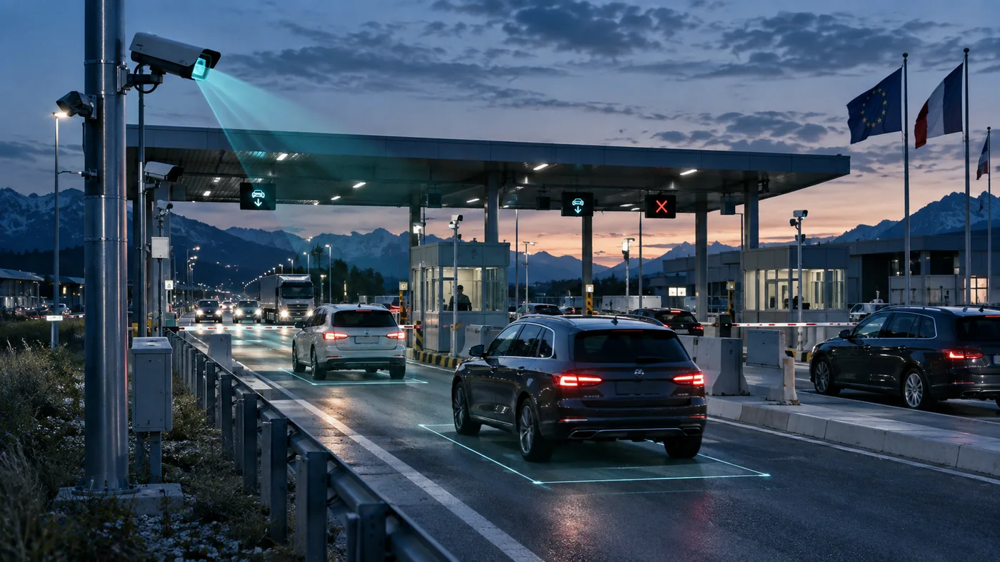
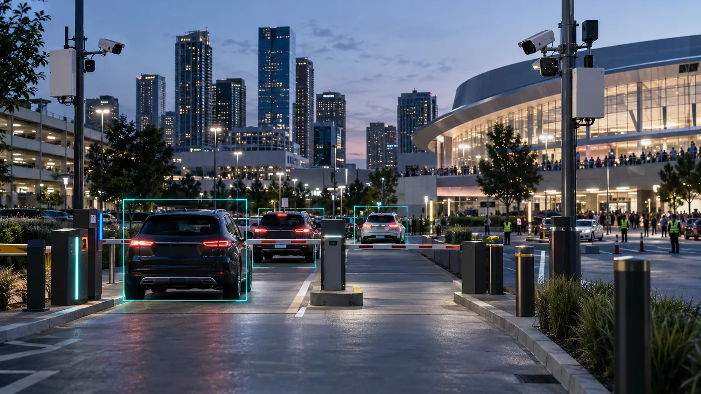

Grenze und Autobahn
Jede Durchfahrt wird zu einem durchsuchbaren Nachweis
Das System erfasst Kennzeichen, Fahrzeugbild, Zeit, Standort und kurzes Video und arbeitet bei Verbindungsabbruch lokal weiter.
KI-Fahrzeugerkennung für kritische Infrastruktur
Enterprise-ALPR und Verkehrsintelligenz für Behörden und Betreiber, die schnelle, prüfbare Kontrolle von Fahrzeugzugang, Parken, Grenzen, Autobahnen und Stadtzonen benötigen.
Betrieb vor Ort
GateVio ist für Orte gedacht, an denen eine Fahrzeugentscheidung fällt, während der Verkehr weiterläuft: Grenzspur, Parkzufahrt, Autobahnkontrolle oder geschützte Stadtzone.

Das System erfasst Kennzeichen, Fahrzeugbild, Zeit, Standort und kurzes Video und arbeitet bei Verbindungsabbruch lokal weiter.

VIP, Logistik, Bewohner, bezahltes Parken und unbefugte Einfahrten lassen sich in einer Ansicht steuern.
Vier Lösungslinien
GateVio kombiniert lokale KI-Entscheidungen mit zentraler Leitsoftware. So kann jede Einführung als Pilot starten und über Standorte, Fahrspuren, Parkzonen oder geschützte Stadtbereiche skaliert werden.
Zentralisierte ALPR für Ein- und Ausreisepunkte, entwickelt für schnelle Fahrzeugsuche und standortübergreifende Bewegungsverläufe.
Ticketloser Fahrzeugzugang und Kontrolle von Parkeinnahmen für Großveranstaltungen, Veranstaltungsorte und verteilte Parkflächen.
Verkehrsmonitoring für Autobahnen und kritische Abschnitte mit automatischen Warnungen für Sicherheit und Verkehrsfluss.
Kamerabasierte Fahrzeugzufahrtskontrolle für Wohn-, Fußgänger- und Schutzbereiche ohne physische Barrieren.
Edge plus Cloud-Architektur
GateVio nutzt NVIDIA Jetson Edge-Verarbeitung für lokale Erkennung und Entscheidungen, während Cloud-Dienste Dashboards, Analysen, Synchronisierung und Multi-Standort-Verwaltung bereitstellen.

Die Bildverarbeitung läuft direkt am Kontrollpunkt auf NVIDIA Jetson AGX Orin oder Jetson Orin NX Hardware und reduziert Latenz sowie Konnektivitätsabhängigkeit.
Standorte arbeiten bei Internetausfällen lokal weiter und synchronisieren Datensätze automatisch, sobald die Verbindung zurückkehrt.
Verbinden Sie GateVio mit Grenzdatenbanken, Stadtsystemen, Parkplattformen, Zahlungsdiensten, Zutrittskontrolle und Leitständen.
Operativer Nachweis
Die zugrunde liegende Machine Can See Plattform wird in operativen Umgebungen in Serbien, Großbritannien und den USA eingesetzt, darunter Industrie, Logistik, Lager und Wohnanlagen.
Stimmen aus dem Betrieb
Repräsentative Kommentare aus Gesprächen zu Grenze, Parken und Stadtzugang, ohne private Interessenten zu nennen.
Wir brauchen nicht noch einen Kamerastream. Wir brauchen einen Datensatz, den ein Beamter in Sekunden findet und später verwenden kann.
Bei großen Events geht es nicht nur um das Öffnen der Schranke. Entscheidend ist, die richtige Zone zu kennen, bevor die Warteschlange entsteht.
Wenn das System ohne Barrieren arbeitet und belastbare Nachweise liefert, ändert das die Steuerung geschützter Straßen.
Einführungsmodell
GateVio ist für Beschaffungs- und Betriebsteams gebaut, die vor dem Rollout technische Sicherheit brauchen. Ein Pilot validiert Genauigkeit, Arbeitsablauf und Integrationen am realen Standort.
Kameras und Edge AI an einem Standort installieren, Regeln konfigurieren und Leistung mit realem Verkehr messen.
Anbindung an bestehende Datenbanken, Zugangsregeln, Zahlungssysteme oder Betriebssoftware über REST APIs.
Ausbau auf Spuren, Zonen, Parkflächen oder Straßenabschnitte mit zentralem Monitoring, Reporting und Support.
Information anfordern
Nutzen Sie das Formular für Demo, technisches Gespräch oder Projektbewertung. GateVio kann Anwendungsfall, Fahrzeugvolumen, Standortzahl, Integrationen und Pilotoptionen prüfen.